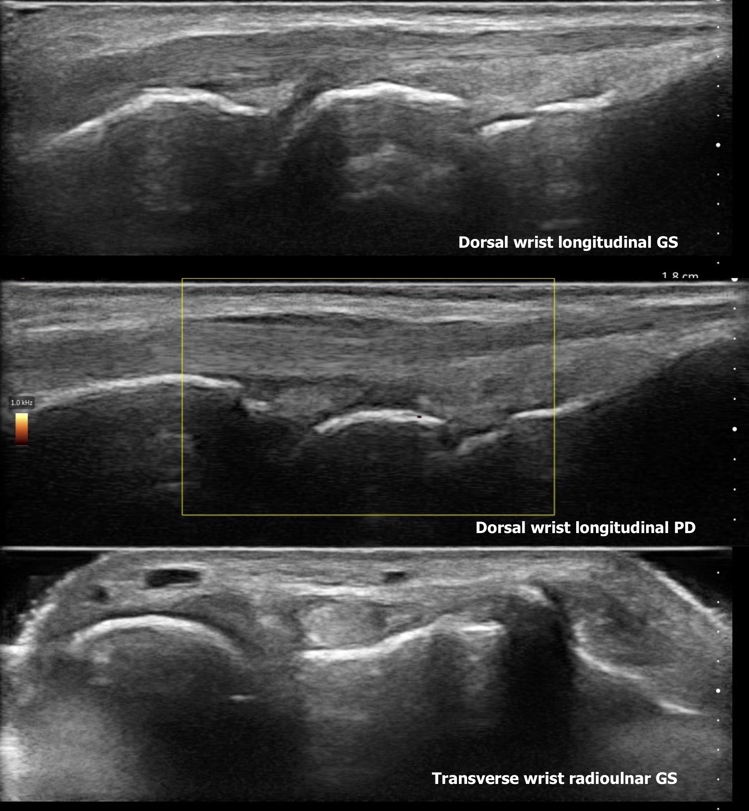
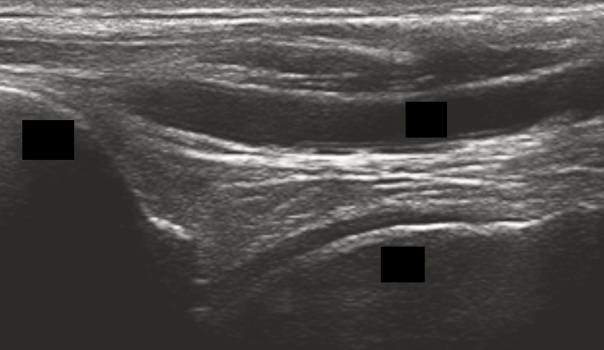
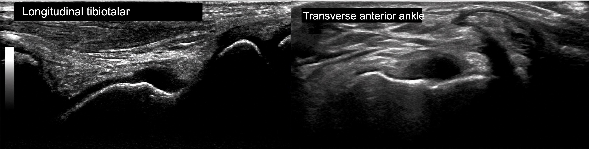
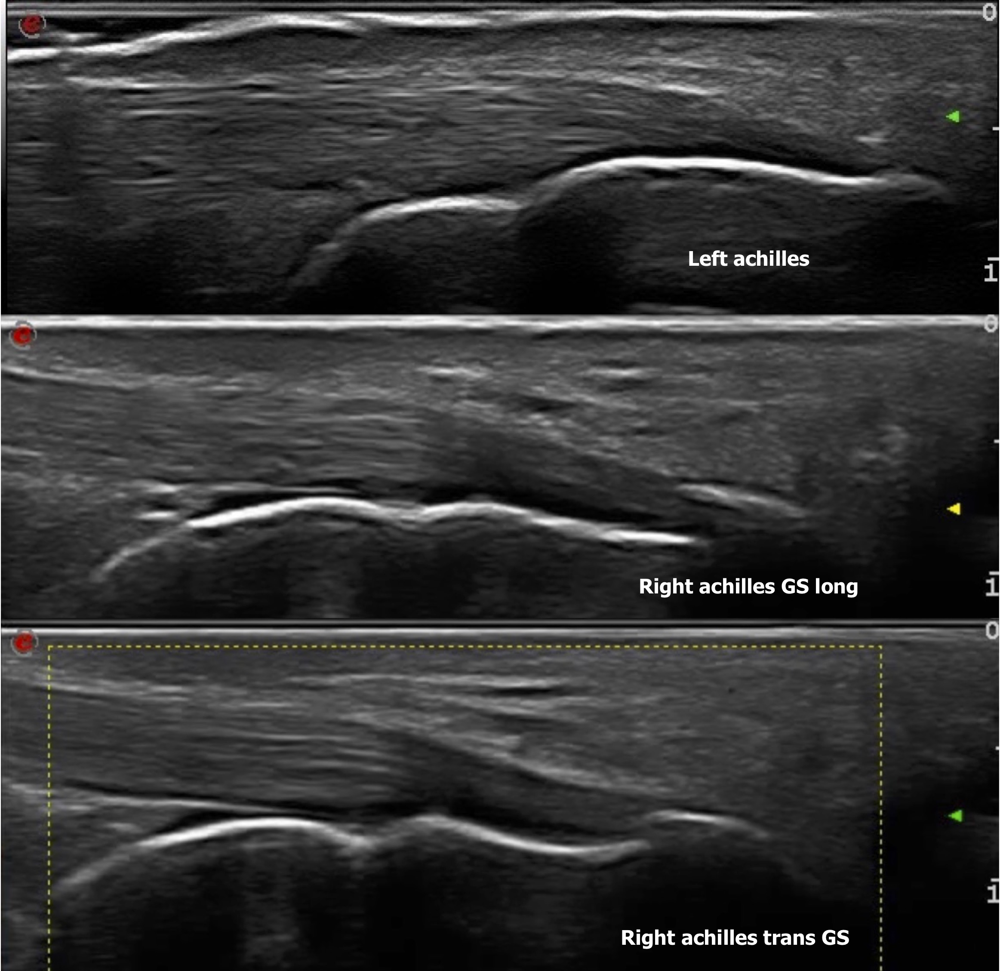

Case 1
Case 1
Case Vignette
A 48-year-old female with psoriasis, referred by dermatology for a year of intermittent arthralgias. (Expand for full history & exam.)
A 48-year-old female with psoriasis over the last year (BSA 2%) is referred by dermatology for assessment of intermittent arthralgias over the last year. Her psoriasis is treated with topicals only.
She describes intermittent episodes lasting 1–2 days of migratory pain affecting wrists, fingers, feet and Achilles/ankle. She has morning stiffness for 30 minutes, but also describes pain more after use or activity and at the end of the day. She does not endorse any overt clinical swelling or dactylitis. She has no back pain, and no history of uveitis or IBD.
On exam, her vitals are normal and BMI is elevated at 29. She has no swollen joints or dactylitis. There is mild tenderness over the wrists and right ankle but no swelling appreciated. She is also tender at the right Achilles insertion but no swelling. No other swollen or tender entheseal sites.
Bloodwork showed HLA-B27 positivity and a CRP of 7.2 mg/L (normal <5 mg/L). X-rays were reported as normal.
You decide to do a focused bedside MSK ultrasound to assess for subclinical synovitis and enthesitis.
Bedside Ultrasound — Wrist


The extensor tendon. There is no tenosynovitis. The hypoechoic area in the middle image is the extensor retinaculum, which is often mistaken for tenosynovitis. On transverse there is mild anisotropy, as the tendon is not hyperechoic. You can separate pathology from artefact by tilting the probe: if the tendon changes from hyperechoic to hypoechoic, that suggests artefact, as pathology would not change. Tenosynovitis would appear as a hypoechoic — or anechoic, if fluid is also present — rim surrounding the tendon, with Doppler seen in two planes (long and transverse).
The capitate. There is mild irregularity, but no clear cortical break in two planes to suggest erosion. This can be seen in normal individuals too.
The joint recesses. The mild hypoechoic areas at the radiocarpal and midcarpal articulations can be seen in normal individuals, as this is the location of the synovial recesses of these joints. There is no clear synovitis or synovial hypertrophy in grey-scale, and no Doppler to suggest pathology.
Bedside Ultrasound — Finger Joints


The MCP joint is normal. Even if one were to suspect slightly more hypoechoic echotexture in the synovium on the longitudinal grey-scale images, there is no power Doppler in the region, and no grey-scale or Doppler synovitis is seen on the transverse images. Pathology requires confirmation in two planes, which is not the case here. These MCP images were obtained in an individual with normal joints using a handheld device, and it is not uncommon to see slight echotexture variations. It is important to get used to normal variation between individuals — and with your own machine.
The flexor tendon is hypoechoic to anechoic on the right side of the image (distally). This is because of anisotropy: the tendon dips deeper, so the ultrasound beam does not hit it perpendicularly and is deflected away from the probe. Anisotropy is often confused for tenosynovitis and leads to erroneous interpretation of pathology. You can differentiate by moving your probe (heel–toe, tilting): pathology does not change with probe angle, whereas artefact should shift from hypoechoic to hyperechoic.
Bedside Ultrasound — Right Ankle (Tibiotalar)


The left ankle, which was non-tender, showed a normal ultrasound. The right ankle (tibiotalar) scan showed an anechoic region at the distal tibiotalar joint. There was no Doppler signal (images not available). The subtalar joint and the anterior, medial and lateral tendons were normal.

This is a normal joint with a physiological effusion, seen not uncommonly at the distal tibiotalar joint. It is not synovitis, as the region is anechoic — which indicates effusion or fluid rather than synovial hypertrophy — and there is no Doppler either. The effusion is small and physiological in this case.
Physiological effusion at this site can also be seen in individuals with degenerative pathology or an elevated BMI. To separate normal physiological findings from pathology, scan other areas of the ankle and interpret the findings in clinical context.
Bedside Ultrasound — Achilles Tendons (Longitudinal)

The right Achilles was tender on palpation at its insertion.
Defining inflammatory enthesitis. Diagnosing inflammatory enthesitis sonographically comprises inflammatory changes (hypoechogenicity, thickening, Doppler) and structural changes (erosions, enthesophytes and calcifications), which have to be close to or at the enthesis. The definition of "close to" is debated between OMERACT (within 2 mm) and GRAPPA ("near the bone cortex") definitions. The diagnosis depends on a combination of these factors, with Doppler and erosions shown to be the most specific. At the single-enthesis level, the definition requires the presence of a power Doppler signal grade ≥2 near the bone cortex, in the presence of hypoechogenicity and/or thickening of the entheseal structure, and within the appropriate clinical context (Ribeiro A et al. Arthritis Rheumatol. 2025). A DUET score has also been developed to help diagnose inflammatory enthesitis at the patient level, although its external validation is pending (Eder L et al. Arthritis Rheumatol. 2025).
In this case. The left Achilles is completely normal, as it has none of the abnormalities above. The right Achilles shows a moderate sized traction enthesophyte. There could be hypoechogenicity at the distal aspect of the tendon, but in reality that was anisotropy, as dynamic testing showed it becoming hyperechoic. However, there is no thickening, Doppler, erosion or calcification of the kind seen in inflammatory enthesitis. Therefore, even if hypoechogenicity were present, it would not meet the single-level definition above.
Why not mechanical tendonitis? Tendonitis may look sonographically very similar to inflammatory enthesitis, with thickening, hypoechogenicity, Doppler and calcifications. However, it often involves a significant proportion of the proximal tendon, or is isolated proximally with no distal entheseal involvement. It would also be unusual to see erosions with mechanical tendonitis — so if erosions are present, that should make you suspect inflammatory enthesitis.